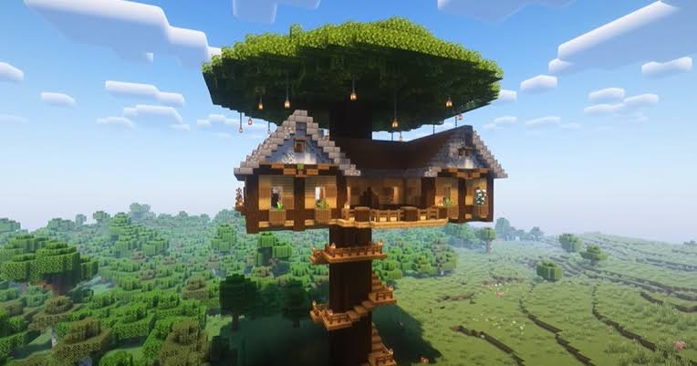

Navigating Minecraft
October 5, 2023 by L.Dawson

The Minecraft gaming platform is a multiplayer game that allows players to explore and build a generated 3D world. Players can gather resources, craft items, and construct building while facing various challenges such as hostile mobs and environmental hazards. The game allows creativity and strategic thinking as well as collaboration among players. The game holds no single goal, giving one the freedom to play how the want. The game is available on PC, smartphones and gaming consoles.
Therer are three main game modes in Minecraft: Survival, Creative and Hardcare mode. In survival mode, the player must gather resources, hunt food and mantain their health while avoiding monsters that come out at night. In creative mode, thers are unlimited resources, players have the abiliity to fly and be immortale while being able to build. Lastly, in the hardcore mode, players have only one life and the game ends forever if they die. The game is a great way to learn about resource management, problem-solving and teamwork. It is also a great way to express creativity and imagination.